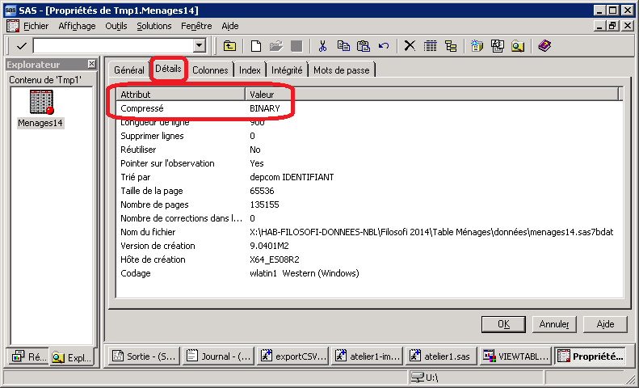

Chapter 5 Importer des données depuis SAS vers R
5.1 Tâches concernées et recommandations
L’utilisateur souhaite importer dans R des données stockées sous format SAS.
::: recommandation Recommandations de l’Insee
- Pour des données de taille petite ou moyenne (moins de 1 Go environ), l’usage de la fonction
read_sas()du packagehavenest recommandé. - Pour des fichiers de taille importante (plus de 1 Go environ), il est recommandé de procéder en deux temps:
- Exporter les données SAS en format
.csv; - Importer en R les données
.csv.
- Exporter les données SAS en format
Il est déconseillé d’utiliser les packages suivants pour importer des données SAS : sas7dbat, foreign, Hmisc, SASxport.
:::
5.2 Quelques détails sur les packages recommandés
5.4 Comment procéder en deux temps?
Etape 1 : Exporter au format csv depuis SAS: exemple de code
options mprint mlogic notes;
libname donnees "W:/A1090/GEN_A1090990_DINDISAS/";
PROC EXPORT DATA= donnees.RPADUDIF
OUTFILE= "U:/RP.csv"
DBMS=CSV REPLACE;
PUTNAMES=YES;
RUN;Etape 2 : Importer les données csv en R (voir § Importer des fichiers plats (.csv, .tsv, .txt))
5.5 Pour aller plus loin
5.6 Quelques conseils
::: conseil * N’importer que les colonnes nécessaires. * Les tables SAS compressées en BINARY ne sont pas prises en charge par le package haven. Il faut donc procéder en deux étapes (export en CSV puis import dans R) :::

5.7 Références
- Pour plus de détails sur la fonction d’importation
read_sas, vous pouvez consulter la documentation du packagehaven.
library(haven)
help(read_sas)- Importation de fichiers plats : Importer des fichiers plats (
.csv,.tsv,.txt)
5.3 Comment utiliser
haven?La fonction du package
havenà utiliser se nommeread_sas()Options de
read_sas()haven